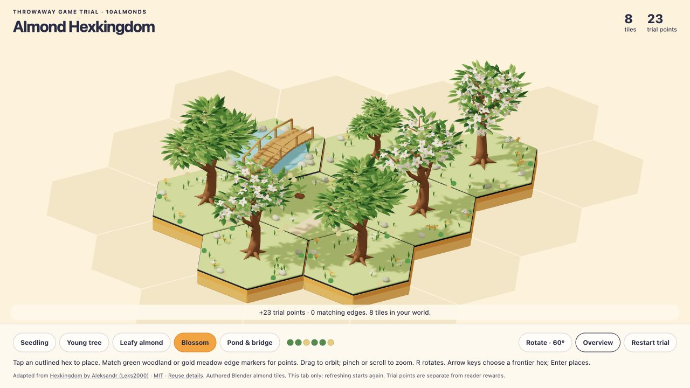
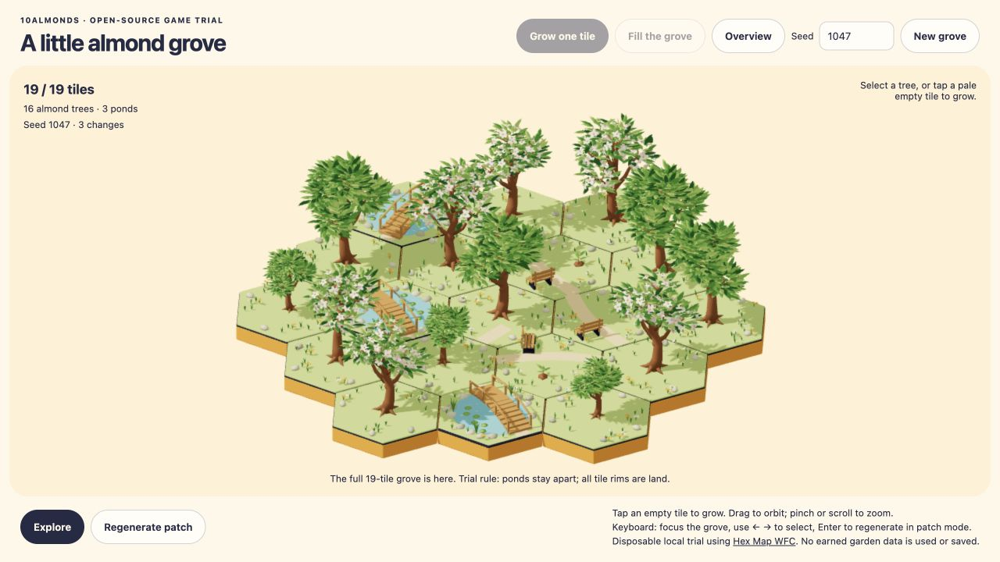

1. Place your forest
Choose where the next hex goes. Try deliberate tile placement and matching neighbours, with our almond trees and pond tiles.
Adapted from Hexkingdom · MIT
10almonds · local game trials
The same Blender trees, hexes and colours in two different ways to build a world. Open a trial, change the landscape, then use its overview control to see everything together.

Choose where the next hex goes. Try deliberate tile placement and matching neighbours, with our almond trees and pond tiles.
Adapted from Hexkingdom · MIT

Let neighbour rules help assemble the world. Try a generated grove and see how the same models work in an evolving landscape.
Adapted from Hex Map WFC · MIT
Does interacting with the world feel useful and enjoyable? Can we keep the trees and hexes readable as the world expands? Which approach feels right for My Almond Forest?